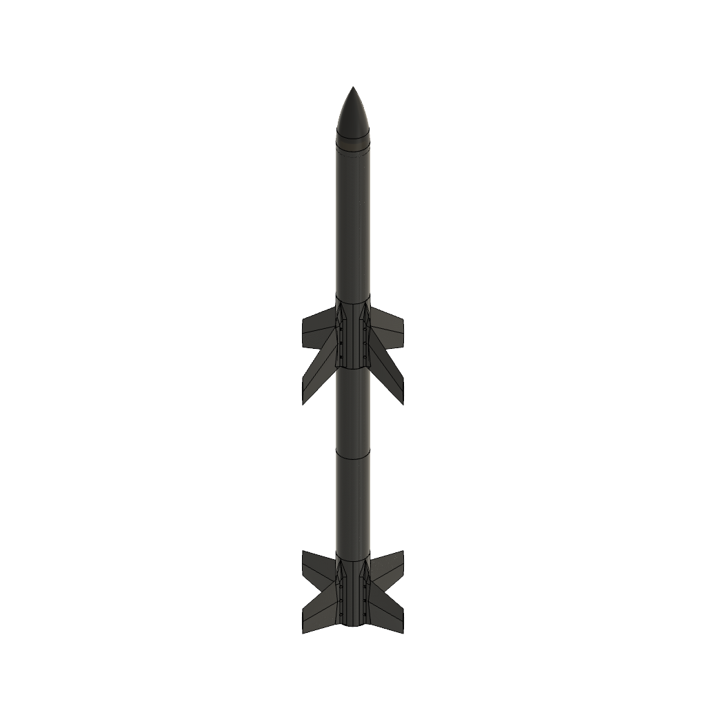

MISSION PROFILE
PIONEER-I CONOPS
기계식 단분리와 내부 점화, 단별 독립 회수로 이어지는 PIONEER-I의 운용 개념입니다.

PIONEER-I / OVERVIEW
설계 개요
CFRP 동체와 핀으로 구조 질량을 줄이고, 각 단에 추진·전자·회수장치를 독립적으로 배치했습니다. 서보모터로 결합을 해제한 뒤 홀 센서로 분리 상태를 확인합니다.
- 1단 동체 길이
- 883 mm
- 2단 동체 길이
- 780 mm
- 동체 내경
- 98 mm
- 동체·핀 재질
- CFRP